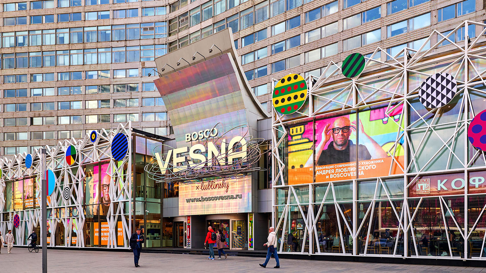
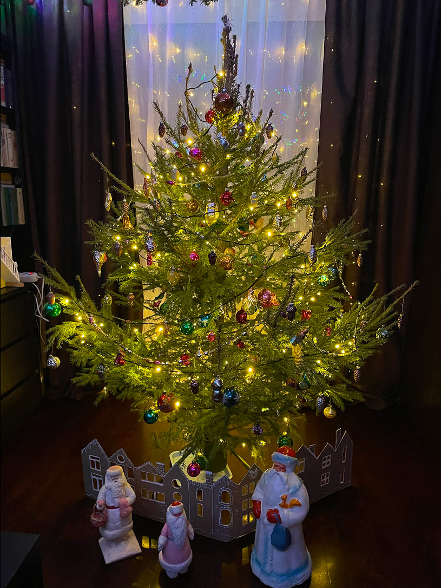
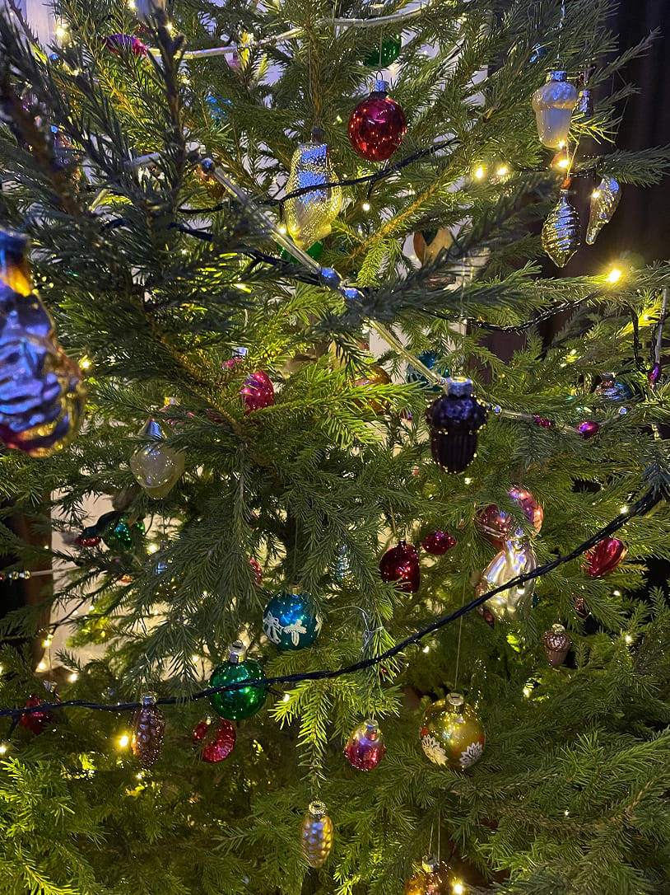
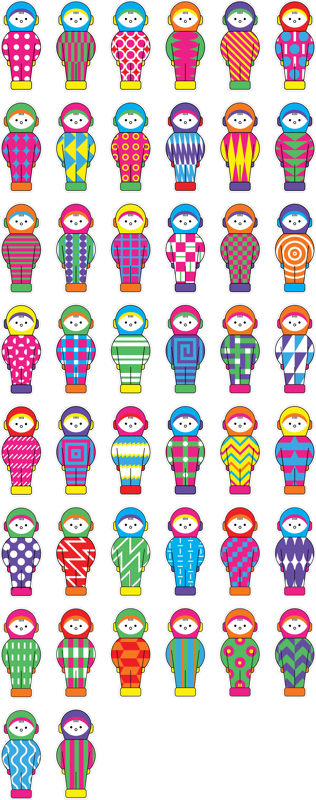
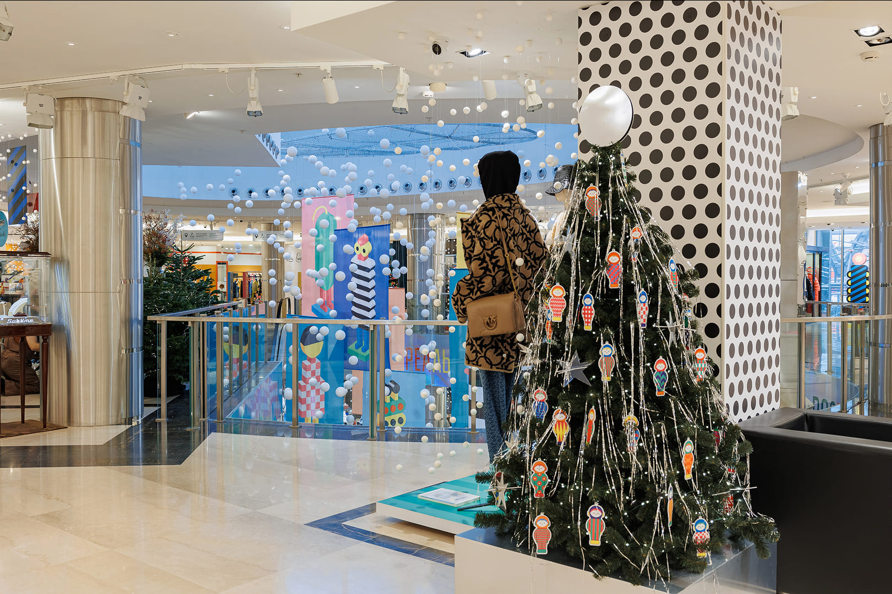
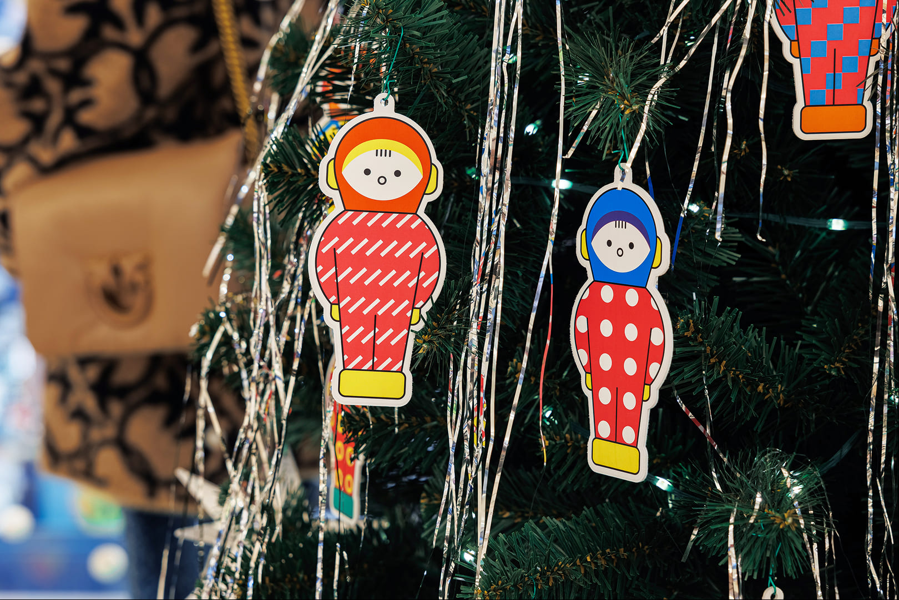

За месяц необходимо было подготовить концепцию ёлочных украшений для ТЦ Bosco Vesna на Новом Арбате, реализовать её и транспортировать в Москву.


Я хотела, чтобы ёлка отражала традиции моей семьи. Каждый год мы украшаем ёлку советскими и ГДРовскими игрушками. Мне показалось, что такие игрушки будут близки гостям торгового центра, будут вызывать приятные воспоминания.

Космонавт — самая тиражируемая игрушка. Игрушка была у всех одна, а воспоминания разные. Я отрисовала 44 разных космонавтов, которые были вырезаны из пластика и оклеены виниловой пленкой. Ещё ёлку украсили ассиметричные звёзды и серебряный диск — луна.


Куратор
Фотографии